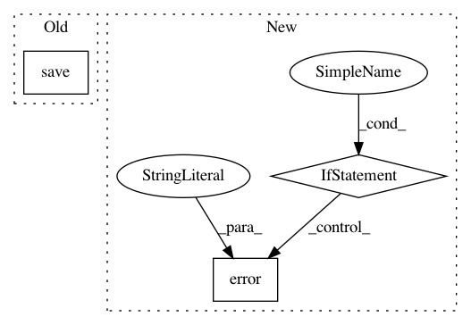

741a954562bf99d23078b54eeb617f601a81f2af,workers/data_refinery_workers/processors/management/commands/queue_processor.py,Command,handle,#Command#,26
Before Change
survey_job = SurveyJob(
source_type="SRA"
)
survey_job.save()
batch = Batch(
survey_job=survey_job,
source_type="SRA",
After Change
elif options["processor-type"] == "SRA":
self.run_sra_processor()
return 0
elif options["processor-type"] == "TRANSCRIPTOME_INDEX":
self.run_trasnscriptome_processor()
return 0
else:
logger.error("Unrecognized processor-type.")
return 1
In pattern: SUPERPATTERN
Frequency: 3
Non-data size: 3
Instances
Project Name: AlexsLemonade/refinebio
Commit Name: 741a954562bf99d23078b54eeb617f601a81f2af
Time: 2017-12-11
Author: kurt.wheeler91@gmail.com
File Name: workers/data_refinery_workers/processors/management/commands/queue_processor.py
Class Name: Command
Method Name: handle
Project Name: deeptools/HiCExplorer
Commit Name: ee17dc4a06779050cb4ccf75722ea018ae8d2af2
Time: 2018-09-16
Author: wolffj@informatik.uni-freiburg.de
File Name: hicexplorer/hicTransform.py
Class Name:
Method Name: main
Project Name: calico/basenji
Commit Name: d6cfffd01a2a3129739c6e76f9d966287b20b7c5
Time: 2019-04-12
Author: drk@calicolabs.com
File Name: bin/basenji_predict.py
Class Name:
Method Name: main